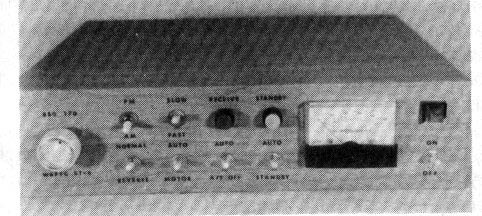
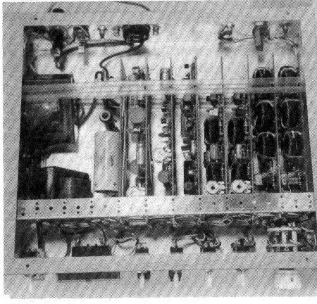
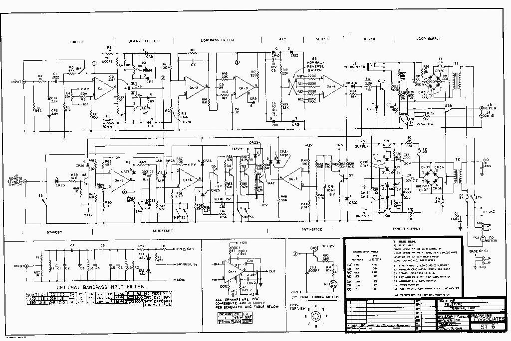
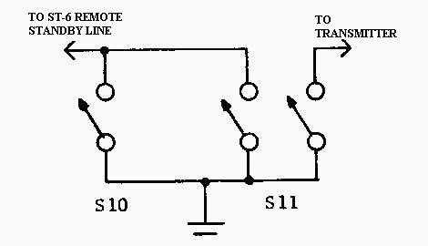
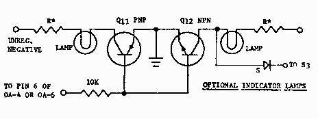

IRVIN M. HOFF, W6FFC - 1970
INTRODUCTION
The Mainline ST-6 RTTY Demodulator is similar in design and
layout to the Mainline TT/L-2 (Sept. 1967 RTTY JOURNAL; May 1968
QST.) It is all solid state, using a number of 709C operational
amplifiers in addition to other transistor devices. The Mainline
TT/L-2 was an upgraded Mainline TT/L (Nov. 1964 RTTY; Aug. 1965
QST). These tube-type RTTY demodulators have been extremely
popular with serious RTTY enthusiasts. The ST-6 follows in this
great tradition.
FEATURES
The ST-6 has an outstanding limiter, a well-designed linear
discriminator, full-wave detection, a 3-pole active low-pass
Butterworth filter, a threshold corrector allowing limiter-less
("AM") copy, a high-gain slicer permitting extremely
narrow shift signals to be copied normally, a 300volt loop keyer
transistor, the well-known "Mainline floating loop"
offering optimum FSK keying of the transmitter, and a 180 volt
loop supply.

In addition, optional bandpass input filters for 850 and 170 shift are provided, antomatic printer control with motor delay ("autostart") that ignores voice or CW, an "anti-space" system that immediately locks up the printer if the signal goes to space longer than a normal RTIY character, simplified switching that provides good flexibility, and a symmetrical plus-minus 12 volt power supply that is adequately regulated. The unit has a limiter on-off switch, a fast-slow auotstart switch for rapid break-in, a manual motor 'on" switch, a meter for tuning signals, remote standby provisions, etc.OTHER "ST-x" UNITS
To keep the record straight, the ST-l was never published. The
ST-2 was nice unit for VHF without autostart motor delay. The
ST-3 (RTTY JOURNAL Sept. 1968 QST; April 1970) was the same unit
having motor delay control in addition to autostart. The ST-S was
a simple unit using two op amps and one 300-volt keyer stage
(RTTY JOURNAL May 1970; HAM RADIO Sept. 1970) and no autostart
features, being intended for the beginner who needs a simple,
easy-to-build unit. The ST-4 was only for 170 shift.

THE 709C OPERATIONAL AMPLIFIERThey do, however, require frequency compensation to be added externally, the amount depending upon the gain to which the circuit is expected to amplify.
OTHER, NEWER, OPERATIONAL AMPLIFIERS
To be sure, there are never op amps having higher gain, will
accept greater input voltages without damage, are not subjected
to "lock up" with excessive input voltages, and do not
require external compensation. However, these units are intended
primarily for use in logic circuits where very low frequencies
(almost "DC") are used. These units make very poor
limiters when compared at audio frequencies with the 709C. They
would be excellent for use in the ST-6 at places other than OA-1
and OA-2. However their cost is such you can use the 709C with
proper compensation and still save money. The difference in
amplification between 90 dB. and 100 dB. is insignificant in this
case, since even 90 dB. would be the equivalent of running the
TT/L-2 (tubetype demodulator) at perhaps 7500 volts on the plate
of each tube. So do not feel the 709C is obsolete in any way for
our purposes.
THE LIMITER
Tile input is designed so that a bandpass input filter is not
required. A simple single-section L/C high-pass filter reduces
the 60 Hz. output of the receiver to an insignificant level, thus
allowing the limiter to "reach into" the receiver s
noise level for the signal. Zener diodes are provided to protect
the input of the amp from possible overload. They are not
intended as part of the limiting action at all, and normally are
not called upon to do a thing. The op amp itself is run at full
"open loop" for limiting. A signal as small as 200
microvolts will produce clipping, and the output waveform with
normal input signals is "story-book" square waveform
with amplitudes approaching that of the supply voltage itself.
A 47K resistor is provided for changing the amplification to a controlled amount, for "limiterless AM" detection should the operator choose to use this system. Since limiterless operation and autostart are not compatible in this type of circuitry, placing the switch to "limiter off" also disables the autostart, and keeps the motor running automatically.
THE BANDPASS-INPUT FILTER(S)
Three-pole Butterworth bandpass filters are offered for the
serious enthusiast. These are 3 toroids each. The 850 shift
bandpass filter is about 1 kHz wide and the toroids are used in
series configuration for 88 mH For 170 shift, they are wired in
parallel (both outside wires together, both "pig tails"
together) for 22 mH. This keeps the impedance's similar for the
two units. The bandwidth of the 170 shift filter is about 275 Hz.
These filters are based on 2125 mark tone. No filters are offered
for those requiring other, unusual audio tones. If the bandpass
input filters are used, the 0.022 mfd. capacitor and the 10K
resistor to ground (pin 2 on OA-1) are not used.
THE LINEAR DISCRIMINATOR
Optimum filters for mark and space channels would probably be
3-pole Butterworth types using 3 toroids for each filter.
However, excellent results are obtained from a well-designed
linear discriminator using only one toroid for each channel. A
great deal of attention must be given with such a simple set of
filters to achieve good noise immunity, good zero crossover,
equal bandwidth and equal output voltages. This is not simple,
particularly when in addition you would like to get both 170 and
850 shift filters to give similar output voltages. The filters in
the ST-6 should meet these requirements nicely, if the exact
values of components are used. The size of the capacitors are
only approximate, as the toroids themselves have 2-3% latitude
and the capacitors will probably be only 10% types as well. This
could easily result in an error of 100 Hz. and more, so careful
attention to tuning each toroid is most worthwhile.
A "plus-plus line" is added to the discriminator to provide a signal for the autostart system as well as to the tuning meter.
THE DETECTORS
Full-wave detection is employed for easiest filtering of the
ripple content. The ST-x series units are unique in this feature.
Germanium diodes are used, as their forward voltage drop is only
0.2 volts or less, as compared with about 0.7 volts for a typical
Silicon diode. This gives some additional dynamic range to this
section. As the Germanium types do not have high reverse
resistance, they can only be used in relatively low impedance
areas. RTTY JOURNAL
You will notice no actual filtering is done in the detector circuit itself, another unique feature of the ST-6. All the filtering is done in the 3-pole active low-pass filter, thus extremely rapid recovery time is possible from things such as noise bursts, static impulses, etc.
THE LOW PASS FILTER
The Mainline ST-6 is probably the first RTTY DEMODULATOR to be
offered the amateur using an optimum bandwith 3-pole Butterworth
low pass filter of an "active" design, that is, with
feedback amplifiers rather than with inductors or other
"passive" components normally used. This offers low
cost, small size, controlled performance, negligible weight, and
results that can be easily duplicated from one unit to the other
with modest cost components. (The inductor used in the TT/L
low-pass filter had extremely sloppy tolerances of about plus 50%
plus additional problems such as magnetic hum, large size, etc.)
The low-pass filter was designed for optimum 60 wpm speed use. It can easily be changed (via two resistors and a capacitor) to 100 wpm speed if needed. It cuts off at 27.3 Hz. DC for a steady mark input, having a ripple content too low to measure on the Tektronix scope at our disposal.
THE THRESHOLD CORRECTOR
For limiterless AM copy, some means of balancing the mark-space
signals from the low-pass filter is required in order that the
slicer can properly change at the right time. The ST-6 thus has
an automatic threshold corrector, called the "ATC" for
short. Again, Germanium diodes are used to give the maximum
possible dynamic range. This circuit was explained in some detail
in previous articles by the author (RTTY Nov. 1964, reprinted
March and April RTTY JOURNAL 1970). It allows single-channel copy
and combines the mark-space signals for symmetrical operation
around of the slicer.
THE SLICER
This is just a "wide open" 709C. Other op amps would
work as well in this position since the signals handle very low
frequency (maximum of 22 ms. reversals for 60 speed). The slicer
has so much gain and the signal from the low-pass filter is so
clean that shifts as low as only 1 Hz will adequately flip the
slicer from full mark to full space output. This with the 850 Hz
shift discriminator as well! This is rather silly, in fact, but
adequately illustrates the terrific potential of the op amps used
in the ST-6.
THE KEYER
This is a Motorola MJE-340 rated at 25 Watts and 300 volts. Other
types are equally suitable, if rated from 300 or more volts. A
spike-absorbing network is used on the collector to prevent
damage from the back-EMF developed in the selector magnets when
several units are added in series to the unit, such as a
reperferator and printer combination, etc. The emitter is
grounded and the base is held to a maximum of -0.7 volts by a
protective diode. Positive voltage is used to saturate the
transistor on mark, and negative voltage it used to assure it
cutting completely off (rapidly) for space. This results in
little or no bias.
THE LOOP SUPPLY
This uses the well-known "Mainline floating loop"
system the author developed for the original TT/L. This method
gives the usual 180 volts or so to the keying stage for low
distortion, but the principle feature is the plus-minus keying
voltages for the FSK system in the transmitter. This not only
gives saturated diode current for best FSK operation, but
controlled cut-off voltage for back-biasing the FSK diode
properly. With this type of FSK voltage you only need to reverse
the direction of the diode to get "right-side up'' operation
if you are reported to be transmitting "up side-down"
from normal. Few other systems (if indeed any other), offer such
a simple solution to this type of problem.
This type of system also offers simple and effective means of providing narrow shift CW identification.
THE POWER SUPPLY
This uses transistor-stabilized, Zener-regulated plus and minus
12V. Again, full-wave rectification is used for easiest
filtering. The output is by-passed for RF.
FUSES
A unique feature of the ST-6 is the liberal use of fused
protection. This provides against dead shorts in the power (and
loop) supply. Thus 24-hour unattended operation should not alarm
the user. With every other item of electronic equipment with
which the author is familiar, only the primaries of the
transformers have been fused. In some instances, partial shorts
have caused significant damage, even minor fires, and yet the
fuse did not blow. This has always been of deep concern since I
leave quite a few units running even when I am on the other side
of the USA for a few days. I have put fuses in the secondary of
all my transmitters, and most of the receivers.
THE ANTI-SPACE CIRCUIT
The maximum time an RTTY signal can go to space is for a
"blank" key. Other than this, for a "T". The
blank has all space information except for the stop pulse, the
"T" has all space information except for the last
information bit plus the stop pulse. For a blank, this maximum
time would be 132 milliseconds, for a "T" it would be
110 milliseconds. Thus if we had a means of determining when the
space signal exceeded say 132 ma. it would indicate the signal
was not an authentic RTTY character.
The anti-space circuit samples all space information, and when it substantially exceeds 132 ma. it says ''tilt'' and puts the printer back to mark-hold, at the same time placing the autostart circuit to a "no signal" condition. As soon as the space signal stops and the first mark information is fed out of the slicer, the unit is discharged almost instantly and normal operation again results. Consequently with normal RTTY, steady blanks will not operate the anti-space, but anything longer will place the printer into standby. Space signals that will not trigger the autostart. This circuit works equally well with the autostart on or off, or with the limiter on or off, or with "straddle- tuned copy".
THE AUTOSTART SYSTEM
This system is based on a concept described previously in the
TT/L, TT/L-2, and ST-3 articles. However there are always some
readers who are not familiar with previous discussions, so here
goes a simplified explanation.
Morse code is perhaps less than 50% "duty time" (key down). Voice is perhaps 20%-30% duty time, depending on things like voice pattern, compressors, intelligence of the operator to keep the audio gain at a proper level, etc.
RTTY on the other hand is actually 100% duty time. Thus we develops method by which a high-duty time will trip a circuit and a low-duty time will not, it should respond only to RTTY. Thus the autostart in the ST-6 (like the others 8 September 1970 mentioned a moment ago) samples both the mark and space channels and combines their output as a one-polarity voltage. As long as this voltage is substantially greater than the trigger point for which the system is adjusted, it will charge a capacitor. If it charges this system long enough, it will then overcome a fixed bias and turn on a relay that starts the motor and at the same time remove a "hold" on the printer magnets allowing it to respond to the incoming signal.
A network is provided to quickly discharge the capacitor in the event the signal stops, putting the printer into standby, and starting the "count-down" on the motor relay. If after 20-30 seconds the signal has not reappeared, the motor is allowed to turn off.
A turn-on to turn-off ratio on the autostart of 4:1 provides about a 75% duty-time requirement to turn on the printer. Since static, fading, momentary interruptions, etc. affect the RTTY signal, around 70-75% duty time seems to give excellent results, and suitable immunity to nearly all CW signals.
By keeping the "turn-off" time about one second (5-6 characters time), adequate protection against static, noise crashes, etc. is provided. This requires a turn-on time of about 3-4 seconds. Thus some information will be lost if the person at the other end is not aware that it will take 3-4 seconds to turn on your unit. However, this is only a small penalty to pay to achieve automatic printer control. It is also possible to have a "fast" auto- start system that operates about 3-4 times faster than this. However poor conditions will give adverse results, so this system is used normally only when the operator is present and working "quick break", etc.
Other ratios may be used, and will in fact keep the ST-6 from responding at all to weak signals that would probably not be copied reliably anyway. A table of such values shall be included if you wish to try various combinations. The disadvantage with higher ratios is the longer turn-on times needed.
THE REMOTE STANDBY LINE
A remote standby jack is provided on the ST-6. When shorted to
ground, it places the unit in standby and also turns off the
autostart, turning the motor on or keeping it on if it had been
already running. This allows you to monitor the incoming signal
from the receiver while transmitting, but keeps the printer from
responding at all, except from its own keyboard. It also keeps
the motor running during the time you are on the air. On the
other hand, if this remote switch is located at the printer, it
allows you to turn the printer on without touching the ST-6
itself. By shorting out the autostart, you pick up an additional
benefit, when you stop transmitting and the remote standby switch
is opened, you can instantly respond to a station
"tail-ending" you to break in -- with normal autostart
on other units, it would take several seconds before you could
respond, unless you had moved to 'fast" autostart. This
feature allows some additional versatility without needing to
"set-up" the other switches previously.
IMPORTANT: A second switch at the printer would be called the "transmit" switch, and would also parallel the remote standby line. It would be a DPST or DPDT switch, one pole would turn the transmitter on, the other pole would short the remote standby line, thus "single-switch" operation is provided. If the motor was not running, you would merely turn the switch to "transmit" and both the printer and the transmitter would immediately start up.
MISCELLANEOUS
We appear to haye covered most of the salient features of the
ST-6. To quickly go over the switches, then;
Printed circuit boards designed by the author are available
for the ST-6. They may be purchased from
(BACK IN 1970):
STAFFORD ELECTRONICS
427 SOUTH BENBOW ROAD
GREENSBORO, N. C. 27401
These particular boards use the round "TO-5" op amps with the 8-pin wire leads. The "dual-inline" 14-pin packages will not fit these boards. These are six boards total, however if you wish to add both 850 as well as 170 shift, you duplicate the first two boards for a new total of 8 boards. Here are the prices: 6 boards 8 boards drilled $16.05 $21.80 undrilled $10.50 $13.50
IMPORTANT: BE CERTAIN TO INCLUDE $1 ADDITIONAL FOR HANDLING, POSTAGE, AND FOR DATA SHEETS RELATIVE TO PARTS PLACEMENT. (REMEMBER: This offer is 20 years old)
Other firms will most likely offer PC boards later on, as the popularity of the unit increases. Over 250 enthusiasts have already sent for the giant schematic we mentioned was available when the ST-S was published a few months ago.
PERFORMANCE
This is still being evaluated. The TT/L and TT/L-2 set a level of
performance that is extremely difficult to exceed, I have yet to
see a commercial unit that will out copy a TT/L or TT/L-2
assuming the deluxe 3-pole Butterworth filters were added to the
Mainline unit. The ST-6 has inherently more residual potential
(by some margin) than the TT/L-2, plus having the advantage of
smaller size, lighter weight, very little heat, etc. At this
writing about 8-10 of the ST-6 have been completed. Most of those
are being used by people already having the TT/L or TT/L-2. In
every case so far, the reports have indicated that in comparative
tests using the same receiver and similar printers that the ST-6
gave noticeable improvement in copy. Other reports had little to
do with the overall performance, just indirect comparison -- the
users were enthusiastic over the autostart operation, were quite
pleased with the versatility and simplicity of the various
switches, were enthused by the attractive and commercial
appearance which the p.c. boards gave, etc. Several people were
quite pleased with the anti-space feature (the TT/L-2 has this
also), as well as the small size, low power drain, etc. These
items all add up to an overall impression. The one feature those
having both the TT/L-2 and the ST-6 commented on without
exception was its rapid recovery after a temporary loss of
synchronization due to static on 80 Meters in particular. Several
people having the ST-6 have already sold their TT/L-2 units, and
one -- Hill Sherwood W6FBY now has two ST-6's in replacement for
the two TT/L-2's and one ST-4 which he has sold.
COST
If all parts are bought brand-new, and all 8 circuit boards
obtained pre-drilled, the total price would be close to $150.
Several firms are planning parts packages which will
substantially reduce this cost. John Hill W4WXJ built his on
vector boards prior to the time the PC boards were completed, and
he estimates he has $70 in the total unit, for both shifts.
NOTE: Schematic may be viewed or saved using your right mouse button, image reduced in size to fit screen.

CONSTRUCTION
The size of the power transformer and loop transformer rather
dictated the size of the overall unit. Those are both
approximately 2.5 inches high, so the cabinet almost had to then
be a minimum of 3'' in height. Various schemes were considered,
and originally small cards less thin 3" wide were planned.
The cost seemed to be prohibitive, when the total number of cards
reached 8, Thus other alternatives were considered, such as a
couple of 6" by 9" boards. Unfortunately this project
was never completed, but the total area in square inches of PC
board had gotten to the point it appeared no great savings in
cost would be accomplished. We then returned to the smaller cards
and found that solder-plating the edge connector fingers would be
adequate for amateur purposes, rather than the more expensive
methods used for the aerospace industry which at first had seemed
necessary. The cost of the boards then fell to what most people
think is a modest price. However, there are 8 of them if you add
both 170 and 850 shift, so the cost is still almost $23 for the 8
boards, pre-drilled. The connectors are $1.25 each, which adds
another 810. The boards can be obtained undrilled, for $13.50 for
the 8, however the tiny no. 77 drill needed for the op amps is
difficult to obtain at most hardware stores, and falls right not
of the typical chick.
By using the 8-board system, a great deal of flexibility is offered, and various boards can be replaced if any changes are contemplated, like a 100- speed board could be built and then exchanged with the 60 speed on the rare occasions the operator might need a 100 speed configuration. Or a 850 shift discriminator could be exchanged with a 400 shift unit. etc. So some flexibility is offered that a vector - board arrangement or one using larger cards might not offer.
With the parts mounted, only the loop supply board exceeds one inch in total height. It also has the current-setting resistor so this board should be the last in the series, and placed so that it faces ''open air" for best cooling of that resistor. From the photographs you will see what we have in mind, All other cards can be separated by only one inch.
We used some aluminum brackets that already were drilled at 1'' intervals. It made a very neat installation, and left room to also mount the power transformer on the same brackets.
The size of the cabinet was 10" by 12" by 3", although other cabinets will certainly work as well. As an example, with a little care, two ST-6 units could go in one cabinet 17'' wide, and the transformers mounted along the rear inside edge of the cabinet, etc.
The cards may be supported in their proper position by a small piece of wood, notched, that runs the width of the cabinet and is Listened to its sides, nothing fancy that would require a machine shop to construct is needed.
While speaking on construction, all the author used to make his unit was an electric drill, some chassis punches (for the meter hole and rear 120V socket for the printer motor), a screwdriver, fine-nose pliers, diagonal cutters, a knife to strip the insulation from the wires, and a tiny soldering iron. These tools are to be found in almost any ham shack.
The cabinet was covered with "shelf paper'' obtained at the local dime store for a neat appearance All the holes were first drilled than the chassis covered and a sharp knife was used to cut the shelf paper away from those holes. No holes or bolts are in the top or bottom of the unit, only on the sides,
The shelf paper was a light-colored imitation wood grain. Pub-on decals were then added for a nice commercial appearance.
TUNE-UP
The ST-6 was designed so that tune-op and alignment procedures
are extremely simple, and once adjusted should not require any
further adjustment. All that is needed is a normal DC voltmeter
reading to at least 12-15 volts.
You are now finished with all the adjustments and can put the bottom on the unit. The autostart sensitivity primarily sets the bandwidth to which the unit responds. The ratio of turn-on to turn-off time is set primarily by time constants in the autostart stage itself. Thus the autostart sensitivity control is inside the unit on the PC board and not on the front panel as on the TT/L and TT/L-2 units.
OTHER "ADJUSTMENTS"
There are no other pots, but there are a few other things which
one may wish to change, The feedback resistor on pin 2 of GA-1
(the 47K was selected for "No bandpass input filter"
configuration, If using the bandpass input filter(s) change this
resistor to 470K. If you wish, you can hand-pick a value that may
work better in your installation. This is simple to do:
For proper operation of the various circuits, it is quite important to have close to 12 volts from the power supply. With modest-cost Zener diodes, this may or may not be the case. If your voltage is more than a half volt too high, remove the silicon diodes in series with the Zoner diodes in the power supply, and short across where they were, If the voltage is less then 12 volts, add another silicon diode in series with the Zeners. On the PC boards, provisions have been made for two silicon diodes in series with each Zener, If one or both are not needed, just short across the terminals to complete the circuit.
The voltage at pin 2 of OA-6 should be at least 2.2 volts, If less than 2.2 volts, change the 2,2K resistor to ground to say a 2.4K size, If the voltage is as high as 2.5 it won't hurt anything.
On the anti-space, the 10 Mfd. capacitor (near Q7 collector) can be reduced in size, if you really want to adjust it ''just right", keep reducing the value until while sending blanks the printer starts printing the letter "T" instead, then go the next larger size of capacitor. However, the 10 MA, should give excellent results.
If you wish, you can measure the current in the loop by placing a milli-ameter in series with the teleprinter. Both the components shown and the Triad N-S1X transformer, the meter will probably read just about 60 mills. This is in no way critical, and if you are reading from any 55-65 mills, fine, forget it. You could change the value of the 2750 ohm 20W resistor in the loop supply to something else to get closer to 60 ma, if it bothers you. Anything within 10% of 60 mills is plenty close enough however For this reason no loop-adjusting pots, or meters are provided on any of the Mainline demodulators, such things are entirely superfluous, but could appeal to individual owners for reasons best known only to them.
The resistor in the collector of Q6 in the autostart relay circuit should be about the same value as the DC resistance ol the relay itself. A 500 ohm 5W resistor is shown. Some 24V relays are around 470 ohms, some around 500 ohms, it really doesn't matter all that much - - this resistor merely keeps the current level in the power supply about the same whether the motor is on or off, helping keep the voltage regulation at an optimum stability.
The 3.6V Zeners on the input (OA-1) maybe 3.9V, but the 3.6V value allows for inexpensive 23% types to be used, if getting 3.9 V types, make sure they are 10% types. Also 4.3 V 10% units could be used, but are not recommended.
DRILLING THE BOARDS
We mentioned previously that the no. 77 drill used for the op
amps (if you drill your own boards) falls out of most drill
chucks. For 75 cents you can buy a suitable drill chuck that
holds anything from no. 60 to no. 80 drills. It is made by
"X-ACTO" (same company that makes the knives for
hobbyists) and is their model 22-A-ST drill chuck, It can be
found at stores handling the X-ACTO line -- hobby stores,
primarily, but some drafting supply stores, some hardware stores,
etc. Here is a little chart that Cole Ellsworth W2FLJ worked out:
709C op amps no. 77 (0.018") 1/4W resistors no. 72 (0.025") 1/2W resistors no. CS (0.035") 1W resistors no. 53 (0.041") 2W resistors no. 55 (0.045")
Most standard drill sets only go down to 1/16" in the smallest size, Although this seems "very small" to most people, this is actually 0,0625", substantially larger (by nearly 50% in fact!) than is needed even for a 2W resistor! You may/may not wish to consider drilling your own boards, then. If your 2 1 smallest drill is 1/16'', forget it!
100 SPEED
Some readers will want to use 100 speed since some MARS nets
operate at the faster speeds. It is very simple to change the
ST-6 for this requirement on pin 3 of OA-3 are two l6 K
resistors. Change both to 10K instead. Also between pins 2 and 6
of OA-2 is a capacitor whose size depends on the discriminator
being used, Make this capacitor 60% of the size used for 60
speed. Example, for the 850 shift discriminator using 2125 and
2975 tones, the normal capacitor is a 0.03 -- the new size for
100 speed would be 0.018 Mfd.
If you will need 100 speed frequently, we recommend you make these changes when constructing the ST-6, as 60, 75 and 100 speed may then be received suitably. Since only a handful of people will have need for 100 speed, the schematic was drawn to show the optimum values for 60 speed.
THE LOW-PASS FILTER
While speaking of the low-pass filter, you may wish to read (or
re-read) Vic Poor's outstanding article on "FILTERS FOR
RTTY" in the May 1964 RTTY issue. He mentions the
requirements for minimum bandwidth filter systems, and shows the
type of "eye" pattern one would get with a perfectly
designed filter for a given reversal speed. At any rate, the
low-pass filter in the ST-6 was designed with this information in
mind. As it happens, Vic Poor was a house guest at the time we
were developing the ST-6 ,and setup the test equipment needed to
observe this eye pattern. We used a Tektronix scope, and he was
delighted with the results obtained. Thus it is safe to say the
low-pass in the ST-6 is indeed minimum bandwidth. This one item
does more for improved performance in mediocre conditions than
any other single thing you can do to the typical demodulator.
Although mentioned previously, with 10% capacitors and 5% resistors, the low- pass filter would then give similar performance from one unit to another, while the use of passive components (such as the 350 mH choke we used in the Mainline TT/L and TT/L-2) with their 50% tolerance limits cannot achieve such uniformity.
AUTOSTART RATIOS
Ratio Duty R61 R59 R60 ON OFF 2:1 67% 5.1 390 4.7K 1.8 .88 3:1 75% 3.6 2.4K 4.7K 2.84 .84 4:1 80% 3.3K 3.9K 6.8K 3.53 .87 5:1 83% 3.0K 5.1K 6.8K 4.15 .84 6:1 86% 3.0K 6.8K 8.2K 5.25 .88 7:1 87% 3.0K 9.1K 9.1K 6.38 .90 8:1 89% 3.0K 10K 11K 7.35 .93
The last two columns are in seconds. These figures give additional autostart ratios you may wish to try to keep marginal signals from tripping the unit.
The table shows various resistor value's that you may try giving more protection against weak signals, CW, etc. The 8:1 value will take a long time to turn on, and will respond only to excellent signals, ignoring signals too weak to print decently on the machine for the most part. For normal purposes, the 3:1 ratio gives adequate protection against CW, does not take excessively long to turn on, and does not drop out if a decent signal takes a momentary dip. Have fun. The autostart sensitivity pot is set as previously mentioned, and not changed at all, regardless what ratio you have chosen to use.
AUTOSTART BANDWIDTH
When the autostart pot on pin 3 of OA-5 has been set as
previously discussed under "TUNE-UP", the unit will
respond to signals approximately plus-minus 45Hz. for the 170
shift filters and approximately plus-minus 100 Hz. for the 850
shift filters.
THE BANDPASS INPUT FILTERS
Some people have wondered what value the bandpass input filters
would be where they already have excellent IF filters in their
receiver, such as 400 Hz. and 1200 Hz. as in the Drake series of
receivers. In this case the value of the bandpass input filters
is indeed negligible with one exception, they do prevent the hum
level in the receiver audio Output stage from reaching the
limiter. However, the input of the ST-6 (when no bandpass input
filter is used) will accomplish this same thing rather nicely. So
in the case of the Drake receivers, the bandpass input filters
really aren't needed. This assumes you do not, however diddle
with the pass band tuning once it is correctly set.
Another astute individual mentioned that he had used a computer to discover that with 60-90 DB of limiting available in OA-1 that the bandpass input filter was useless, since the limiter itself would amplify to at least the 60-80 DB point on the filter skirts anyway. This only indicates that the individual was not familiar with the properties of a limiter, and the "capture effect" limiters exhibit. Any strong signal will capture the limiter in virtual exclusion of other weaker signals. This is a familiar phenomena on 2M FM voice channels, repeaters, etc. If two people are talking at one time, they do not interfere as in "AM" signals where you may hear both of them simultaneously. On "FM", the stronger station captures the limiter and you do not even realize there is a second, weaker station on the frequency at all unless you stop transmitting.
Thus with the bandpass input filter, it still does a lot to minimize the effect a strong nearby station will have on the limiter , If the IF in the receiver is rather broad (many receivers have only a 2100 Hz. IF position, and no 400 or 1200 filters at all), then the use of a bandpass input filter is most worthwhile, particularly when the operator keeps the RF gain back to where even strong signals do not completely capture the AGC in the receiver.
No, even though the limiter has all sorts of gain, it does not mean a bandpass input filter is of no value, as the limiter follows that filter. Again Vic Poor went into some detail on this type of thing in his May 1964 article, one of the really outstanding articles ever written for RTTY enthusiasts, and still the most authoritative discussion of this type available to amateurs. Perhaps the editor will reprint that article at some future date.
BUTTERWORTH FILTERS
3-pole Butterworth filters would be beneficial in place of the
simple single- toroid linear discriminators offered. However they
are somewhat difficult to make at home, so we started out with
the more simple filters. I have 80-Hz. filters for 2125. 2295,
2425, 2905 and 2975 in my personal TT/L, plus linear
discriminators for 170 shift and 850 shift. I find myself quite
satisfied about 98% of the time with the 8S0 shift linear
discriminator, or perhaps I should say that 98% of the time I
prefer the linear discriminator, as it is much more tolerant of
signals that are not exactly 850, that drift, etc. Even when I am
sitting right there watching the units perform, I almost never
used the 3-pole Butterworth filters unless there is a
considerable amount of interference of the frequency.
WHY NO DTC?
This is a complex discussion that I would prefer to avoid
entirely. The DTC as used in the TT/L and TT/L-2 is an extremely
high impedance circuit. This was done so that relatively small
capacitors could be used in 10% values for accuracy. To get the
DTC to work properly, the disconnect capacitors have to be
completely discharged in one bit time (22 ins. for 60 speed, 13
ins. for 100 speed). Even so, the disconnect capacitors in the
TT/L circuit are 0.5 Mfd. To short out a capacitor, this size in
only a few milliseconds takes a pretty hefty system. It was
taxing the cathode-follower to do this properly. This is why the
DTC in the TT/L-2 doesn't really work properly at 100 speed where
the total bit time was less than the discharge time.
In the ST-6 is used easily discharge a much larger capacitor in only 2-3 milli-seconds, but other problems then become important. In the TT/L and TT/L-2, we had some 60 volts of mark and space signal to play with. In the ST-6, we only have about 9-10 volts instead. We thus went to Germanium diodes rather than Silicon to get dynamic range. These diodes do not have high reverse resistance, so cannot be used in high impedance circuits.
To circumvent the forward voltage drop of the diodes so that 50-60 dB. dynamic range or more could be realized, op amps could be used. Indeed a DTC circuit has been developed which offers 70-80 dynamic range, but it uses 8 op amps. In order to use this to advantage, you could not use diode detection either, but would need an active detector. We also have developed this circuit, but again it takes another op amp plus a discrete stage.
Since the only time the DTC circuit really comes into its own is during limiterless AM copy on slow hand-sent signals, we decided to just leave it off entirely. Our experience has shown that few people use limiter-less copy except in rare occasions anyway -- due probably to the fact the automatic printer control (autostart system) must be disabled.
This entire subject is worth an article all its own. We felt the improvement offered by the DTC during conditions that few people normally use anyway was hardly worth the rather complex circuitry needed in solid-state units.
This is why we wince whenever some body tries to come up with a solid-state replacement for the TT/L-2, and includes the DTC together with lots of silicon diodes. Although they don't really have ag ood grasp of the problems involved theyp lunge ahead anyway, and the typical reader thinks boy this is great, and it has DTC also. The truth is those units would do well to get even 20-25 dB. of dynamic range -- this would be the theoretical limit, in fact.
NEARBY RF
These 709C op amps have such fantastic gain we were afraid they
would amplify every broadcast station in town unless great care
was used, short leads, etc. We added by-pass capacitors to each
op amp power supply lead, to the input, and to the power
supplies. We are able to run a full kilowatt on any band and yet
not affect the ST-6 adversely, in fact our ST-6 is used on 20
Meter autostart, yet copies just fine while transmitting on the
80M band.
170-850 SHIFT (BOTH)
You will need a two-position multi- pole switch for this. You
would want to switch the audio input, the mark scope display, the
space scope display, the output of the limiter, the 47K (or 470K)
limiter- out resistor, the autostart (and meter) line, and the
discriminator output to the input of the low pass filter, This is
perhaps 7 items lobe switched. I used at two-section (6 poles per
section) two position ceramic switch. Since this gave me 12
poles, I also switched the unused bandpass input filter to
ground, and also switched the unused board to limiterless
configuration, to eliminate any possible cross-talk.
CHECKING FOR OSCILLATiONS
The OA-1 limiter is run "wide open" with minimum
frequency compensation for maximum loop gain. The unit was tested
with seven different op amps and no oscillation occurred. You can
quickly determine if there is any such oscillation by looking at
the tuning meter with no audio input connected. If the meter does
not say zero reading, you probably have an oscillation, Try the
unit both in limiter on and limiter off to see that the meter
does indeed read or remain at zero. It should. If it doesn't, you
may wish to put a 5-10 pf. capacitor across the feedback resistor
if this occurs in limiter off position as well as increase the
value of the 47 pf. on pin 8 of OA-1 to perhaps 68 or 82 pf. If
you do get an oscillation and these steps do not immediately cure
it, replace the 709C op amp and go back to the original values
and start over. One individual got this oscillation and found he
had a bad op amp for OA-1.
SHIELDED LINES
The boards were all laid out so that shielded lines are not
needed with one exception, we found it would be advisable to
shield the lines to the scope jack on the rear, as they are
rather high impedance on most scopes, and you can pick up
"cross-talk" very easily from the other channel.
INDICATOR LAMPS
Fig. 1 shows an indicator lamp system --if attached to pin 6 of
0A-4, they will show mark and space. While nice it is somewhat
superfluous, and most operators prefer to have an indication of
standby and receive instead, so attach it to pin 6 of OA-6. In
this case the diode is added to the collector of Q-12 (it would
be left off for the mark-space indication by the way) and
connected to the standby switch S3. There is no provision for
this diode on the PC boards. All other components except the
lamps themselves are on the boards, however.

These two switches would be located at or on the printer. S10 provides a standby line that also turns the motor on if it has been off. S11 is the master station control and turns the transmitter on while putting the ST-6 in standby. With these two switches at the printer, the ST-6 need not be within arm's reach.
Say you have a green lamp for receive and a yellow lamp for standby, in this case whenever the standby switch S3 is used, both the yellow and the green lamp come on. The green lamp merely indicates that the autostart system is off, the yellow lamp merely indicates that the autostart system does not think there is a signal or that the unit has been placed in standby by the anti-space or the standby switch itself.

The fact that both lights come on whenever the standby or remote standby switches are used makes an excellent fall-safe indication that you Indeed do have the system in manual standby. Thus you would not wish to leave the room with both lights on, as this would indicate the automatic system was disabled -- also the motor will stay on which is a second indication.The lamps should be low-current types. Most 12V lamps are 80-170 mills, and this is really too much for the transistors to handle with only a 10K resistor to their base. We suggest you use Sylvania cartridge indicator lamps - they have one that takes only 15-20 mills at 16 volts, others that take only 35-40 mills at 18V. Both Allied and Newark handle the Sylvania brand, If you must use lamps that require 80 ma. current, change the 10 K resistor to a 4.7K value.
PARTS
You will no doubt wish to scrounge many of the parts from the
junk box. All resistors can behalf-watt or even quarter watt
except where shown otherwise. On some diagrams the 33K on pin 6
of OA-4 is shown as a 1W, the draftsman marked the wrong
resistor, the 2.2K on the base of Q1 should be 1W, the 33K can be
1/4W or more.
The 5W resistors can be Ohmite type 99, Sprague type 243E, Mallory type SMOL, etc.
The op amps most be the TO-5 type round can with 8-pin leads for the PC boards, if making your own boards or using vector board, you may prefer the dual inline 14-pin types. Motorola, Signetics, Fairchild, National Semiconductor, and Texas Instruments all make the 7090 units, but call them by somewhat differing names, Prices are constantly dropping on these, it is possible to get them from some manufacturers for as low as $1 each in small quantities (1-99) now.
Nice 0-1 mA meters are available for under $5 -- the one I used was gotten at "Ham Shack" for $2.98 -- this one was on the ST-5 pictured in the July- August RTTY JOURNAL. The one on the ST-6 is a ''Micronta" for under $5.
The relay is any 24V (approx. 500 ohms DC resistance) DPDT type, such as the Potter and Brumfield KA11I)G for $3.90.
The pots are 399 Mallory MTC-L1 for vertical mounting on PC boards. (The MTC-L4 are for horizontal mounting.) IRC makes a similar type of pot also for 39 cents.
The smaller value capacitors that fit the PC board best are Sprague "Orange Drop" Mylar-types, 75 volts or more rated. The 0.1 Mfd. 400 volt in the collector of Qi was a Sprague "Black Beauty" type 160P. The 10 Mfd, 20 Mfd, 150 Mfd, and 350 Mfd. are Sprague type 30D, The 100 Mfd, 250 Mfd, and 1000 Mfd. in the power supply and loop supply are Sprague TVA electrolytics. The 0.1 Mfd, capacitors used on pins 4 and 7 of each op amp are Sprague Hypercon disc ceramic type BY550 at 25V, for 21 cents. RTTY JOURNAL
Diodes marked "G" are 1N270 germanium Those marked "5" are silicon, 50 PIV except those in the loop supply which must be at least 400 PIV The 3.6V Zener diodes can be Motorola type 1N5227 at $.67 and the 12V can be 1W such as the Motorola 1N4742, etc. Other types maybe substituted.
Q1 is a Motorola MJE-340 for $1.06. Other 300-500 volt transistors rated SW or more will work as well. Q2, Q3 andQ4 are normal PNP such as MPS-3703 for 399. QS and Q6 are medium-voltage NPN such as MPS-6565 for 529, Q7 and Q1O may be MPS-3394 for 279. Q8 ia a NPN such as the MJE-340 or RCA 40635 or 40314, The PNP used for Q9 may be a MJE-370 or RCA 40537 or 40362. Others will work as well, make sure they are at least 5 W.
Other types of transformers may be used. The Stancor P4-8421 makes a good loop transformer. Literally any 24VCT transformer of at least 400 ma. will be suitable for the power supply.
The toroids are 88 mh. types obtained from several advertisers at the rear of this publication.
ST-6 KIT OF PARTS
Arrangements have been made with George Perrine W9KOI of Hal
Devices to supply a complete kit of parts for the ST-6. This
includes PC hoards (available separately) for the dual-inline
14-pin op amps. A brochure listing prices and options is
available from:
HAL DEVICES (note: probably not a valid
offer 20 years after it was made)
P.O. Box 365
URBANA, ILLINOIS 61801
Approximately $25 can be saved over prices normally paid when the items are purchased separately. George also mentions they can build a limited number of complete ST-6 units ready to use.
A unique transformer is also available from Hal Devices that has both the loop supply winding and the 24VCT winding as well. This will save money for the ST-6 as well as other solid -state projects, and take up substantially less room.
Newark in Grand Rapids is no longer able to offer this service, as Truman Boerkoel K8JUG has been transferred to the home office in Chicago.
Charlie Halls W1KJL in New Hampshire is also offering a kit with most of the parts (less p.c. boards), John Roache W1SOG of 'J-J Electronics' is also planning to offer the complete ST-6 unit ready to use, on a custom built basis. Check the ads in this issue for more information.
ST-6 HOARDS IN CANADA
Len Morris VE3FJB has made arrangements for ST-6 PC boards to be
made in Canada. They will be available from:
SPACE CIRCUITS LTD. (note: probably not a
valid offer 20 years after it was made)
156 ROGER STREET WATERLOC.
ONTARIO
ATTN: MR. HUGH WATT VE3HY, PRES.
The boards are on fiberglass, are tinned, drilled and back marked.
FUSES
The fuses shown are correct if no indicator lamps are used. On
the PC boards, these lamps connect downstream of the 10 ohm
resistors, so the fuses may need to be the next larger size. It
will depend upon the current in the lamps you choose.
SWITCHES
S7 is shown in 120 VAC 'off' position. All other
switches are shown normal autostart receive with the exception of
S-4A which is shown in 'FAST' autostart. We recommend you orient
the switches so they would all be in the 'up' position for normal
unattended automatic reception. HEAT SINKS On the main power
supply, if using any of the RCA transistors for Q8 and/or Q9,
finned heat sinks would be advantageous, as there will be around
0.4 watt dissipated, these transistors are normally rated at 1W
in free air, The Motorola types are rated at over 20W, however
they will only take a maximum of 500 mills. The ST-6 pulls
approximately 75 mills on each of the two supplies. While
speaking of the power supply, the PC boards are laid out for the
Motorola MJE -- transistors. The RCA and others will fit, but
follow the instruction sheets very carefully, as the base
terminal is in a different position than on the other transistors
on the other boards.
OPTIONAL AUDIO TONES
Many people say they "cannot receive 2975 audio" and
must have other tones like 1275-2125, In almost every case,
receivers CAN in fact receive 2975, but it requires changing the
BFO crystal or the carrier oscillator crystal about one kHz. from
that normally used. This is usually fairly simple to do, and the
results are superior to those obtained when using 1275-2125 audio
for reasons beyond the scope of this discussion, However for
those who insist on using 1275-2125. here are the values:
DISCRIMINATOR VALUES FOP "LOW TONES"
170 850 1275/1445 1275/2125 R'A' (R1) 2.7K 1.5K R'B' (R2) 27K 8.2K R'C' (R3) 2.7K 2.2K R'D' (R4) 240K 160K C'A' .18 .18 C'B' .12 +.018 .068 C'C' .022 .033
The numbers in parenthesis are designations originally put on the schematic prior to numbered components; many people who sent for the original schematic would not recognize the newer designation on the current schematic. No bandpass input filters are contemplated for the ''low tones", as most serious enthusiasts do not use 1275-2125.
TUNING THE FILTERS
The capacitor values for tuning the filters are only approximate,
You will need a some means of determining accurate mark and space
frequencies. If not familiar with the procedure used to tune the
Butterworth bandpass input filter, you may wish to review the
article on this subject in the Sept. 1966 QST magazine by the
author. A quick review is to leave the input and output resistors
off temporarily, short across the middle toroid and tune the
first and third sections independently. Then remove the shorting
wire on the middle toroid and short across the first and third
toroids. Now tune the middle section. Remove the shorting wires,
add the resistors and you are finished.
If you have a digital counter a good way to tune the mark and space filters accurately is to tune for maximum voltage on the meter, then tune to either side for the same meter reading, read the counter for each and average to find the center frequency, and make whatever adjustments are indicated.
FRONT PANEL LAYOUT
The layout I used may or may not appeal to you. The rotary switch
at the left selects 170 or 850 shift. The two switches on the top
row are 51 (limiter on-off) and S4 (fast-slow autostart). Then
comes the green receive lamp and the yellow standby lamp.
Underneath these from left to right is the neon "power
on" lamp and the S7 on-off switch below that.
REAR PANEL LAYOUT
In my case, from left-to-right on the rear: First the remote
standby jack, then the scope jack (two-way jack), the audio input
(600 ohm), then the printer motor jack, the FSK output (Or to the
AFSK system either one, such as the Mainline AK-1 AFSK), then the
teleprinter jack and finally the master fuse and 120 VAC input
line. The fuse does not carry the motor current, the motors
themselves have protection inside the printer proper.
FINAL COMMENTS
The ST-6 project has created more interest than any project the
author has would not undertaken, Over 250 people sent for the on
the current schematic, schematic prior to its publication. Those
who have built the unit already seem enthusiastic over it as
those who want build it.